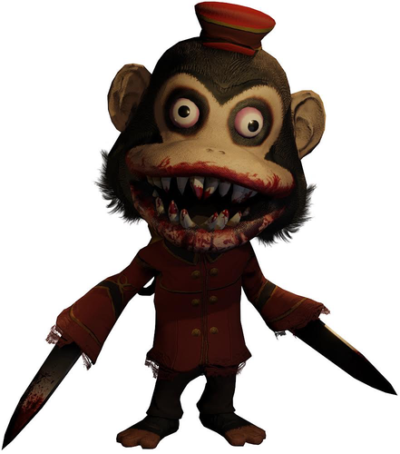
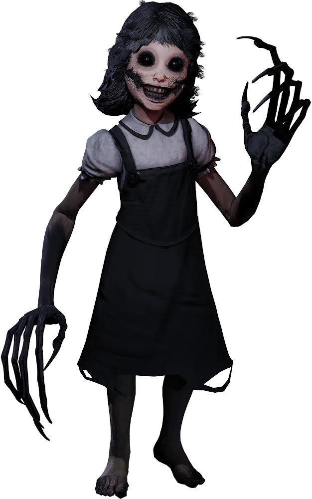

Interview with Minecraft Zombie:
What made you want to start scaring people?
I... don't have a choice. People are just scared by me. Why?
How did you become a monster?
I died. Then I was reanimated by... something.
If you were able to turn back to normal at anytime, what would you change?
I would give myself a brain.
What is your daily life as a monster like?
I just walk around. I live underground, because the sunlight hurts me.
@MiNcErAfTeZombi

Interview with Murder Monkey from Dark Deception:
What made you want to start scaring people?
Because this was a good choice for me. I was a murderer during my life so I wanted to continue that in my afterlife.
How did you become a monster?
Malak turned me into a monster after resurrecting I died trying to get the ring pieces.
If you were able to turn back to normal at anytime, what would you change?
I wouldn't change and I would still stay a murder monkey.
What is your daily life as a monster like?
Chasing down people in the Hotel Room and doing jobs for Malak.
@MurderMonkey

Interview with Agatha
What made you want to start scaring people?
I wanted to scawe peopl because it brings me happiness
How did you become a monster?
Malak after Bierce sacrificed me, I swear when I get my hands on Bierce… *sigh* Anyway, Malak took real good care of me so I think of him as a father.
If you were able to turn back to normal at anytime, what would you change?
I would avoid that deadbeat Bierce at all cost and never step foot in that palac again.
What is your daily life as a monster like?
Trying to find new playmate and doing jobs for Malak
@agatha
